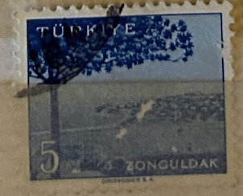
| SOURCE | TITLE| IMAGE MATCH | click to source page |
| Lighthouse Stamp Society | Stamps – Turkey | Lighthouse Stamp Society | 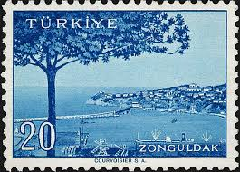 |
| Dreamstime.com | 806 Zonguldak Stock Photos - Free & Royalty-Free Stock Photos from Dreamstime | 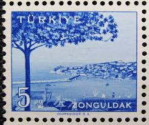 |
| Alamy | TURKEY - CIRCA 1959: stamp printed by Turkey, shows Turkish city, Zonguldak, circa 1959 Stock Photo - Alamy | 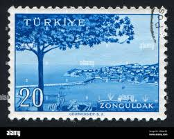 |
| Dreamstime.com | Ciudad De Zonguldak, Turquía Fotografía editorial - Imagen de : 78555622 | 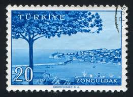 |
| Benim Koleksiyonum | 1958/1960 Country Series City Stamp: Giresun Quadruple Block Stamp | 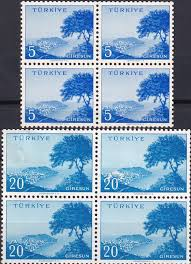 |
| eBay | Nature Turkish Stamps for sale | eBay | 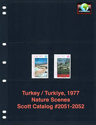 |
| Alamy | ISTANBUL, TURKEY - JANUARY 02, 2021: German State Bayern stamp Stock Photo - Alamy | 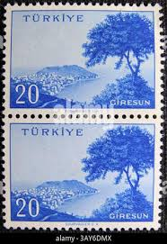 |
| 123RF | TURKEY - CIRCA 1959: Stamp Printed By Turkey, Shows Turkish City, Mardin, Circa 1959. Stock Photo, Picture and Royalty Free Image. Image 12594349. | 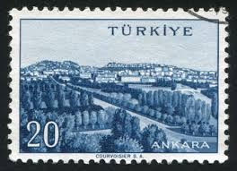 |
| Waterfall Postage Stamp | 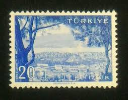 | |
| Benim Koleksiyonum | 1958/1960 Country Series City Stamp: Zonguldak Quadruple Block Stamp | 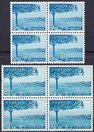 |
| HipStamp | Turkey #2132 5K Kemal Ataturk | Europe - Turkey, General Issue Stamp / HipStamp | 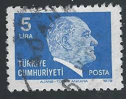 |
| Shutterstock | Burma Circa 1961 Stamp Printed Burma Stock Photo 120649318 | Shutterstock | 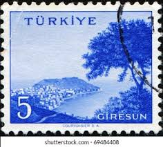 |
| iStock | Turkish Stamps Stock Photo - Download Image Now - Ankara - Turkey, Black Background, Cancellation - iStock | 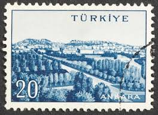 |
| ayşegül köseoğlu (koseogluaysegul) - Profile | Pinterest | 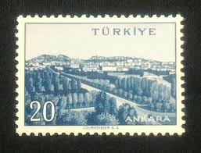 | |
| eBay UK | Turkey Postal Card, Stationery Stamps for sale | eBay UK | 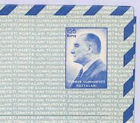 |
| Shutterstock | Istanbul Turkey December 25 2020 Turkish Stock Photo 2627017021 | Shutterstock | 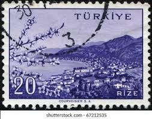 |
| Stampedia | stampedia TURKEY STAMP catalog | 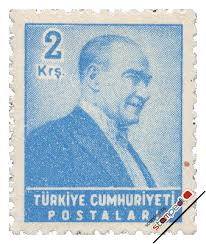 |
| Benim Koleksiyonum | 1958/1960 Country Series City Stamp: Ordu Quadruple Block Stamp | 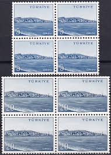 |
| Shutterstock | Ankaratürkiye 12302023 Postage Stamp Printed Malta Stock Photo 2406945129 | Shutterstock | 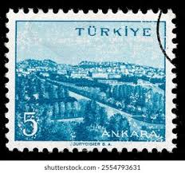 |
| HipStamp | Stamps Are Friends / HipStamp |  |
| eBay | 30993) Turkey 1969 MNH** Chamber Of Commerce 1V | eBay | 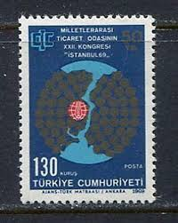 |
| Shutterstock | 5+ Thousand Turkish Postage Stamp Royalty-Free Images, Stock Photos & Pictures | Shutterstock | 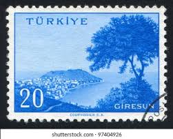 |
| eBay Canada | TURKEY SC#2440 1992 10000 LIRE XF CIRC LARGE DEFINITIVE POSTALLY USED STAMP | eBay | 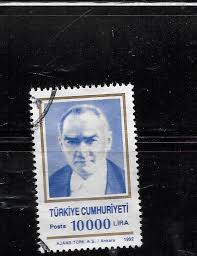 |
| 123RF | TURKEY - CIRCA 1959: Stamp Printed By Turkey, Shows Turkish City, Mersin, Circa 1959. Fotos, retratos, imágenes y fotografía de archivo libres de derecho. Image 12594162 | 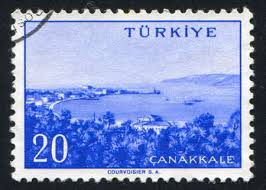 |
| Stampedia | stampedia TURKEY STAMP catalog | 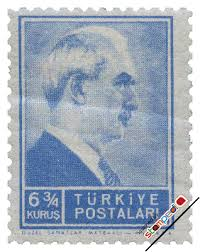 |
| Stampedia | stampedia TURKEY STAMP catalog | 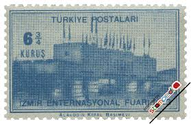 |
| Some of my favourite stamps from Türkiye 🇹🇷 . . . . . . #stamp #stampcollection #visualart #turk #turkish #turkey #creative #artwork #reel | 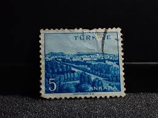 | |
| Colnect | Stamp: Chamber of commerce (Türkiye (Turkey)(Chamber of commerce 1v) Mi:TR 2137,Sn:TR 1803,Yt:TR 1896,Sg:TR 2281 📮 | 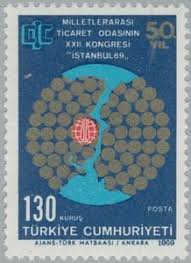 |
| Dreamstime.com | Kemal Ataturk, Founding Father of the Republic of Turkey Editorial Photo - Image of correspondence, head: 199277236 | 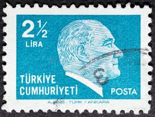 |
| Münir Özkul serisinin devamı. #münirözkul #filateli #stamps #pul #philately | 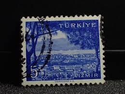 | |
| Alamy | TURKEY - CIRCA 1964: Stamp printed in Turkey shows portrait of Mustafa Kemal Ataturk (1881-1938), circa 1964 Stock Photo - Alamy | 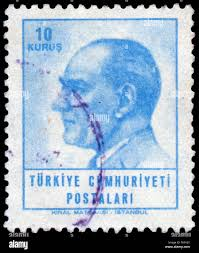 |
| Alamy | TURKEY - CIRCA 1941: stamp printed by Turkey, shows Mustafa Ismet Inonu, President, circa 1941 Stock Photo - Alamy | 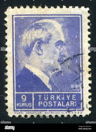 |
| iStock | Serbia And Montenegro Postage Stamp Stock Photo - Download Image Now - Antique, Black Background, Black Color - iStock | 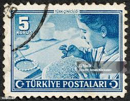 |
| HipStamp | Turkey 1957 Early Issue Fine Mint Hinged 1K. 091582 | Europe - Turkey, Stamp / HipStamp |  |
| eBay | Turkey 1969, 22nd Congress International Chamber of Commerce set MNH, Mi 2137 | eBay | 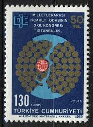 |
| Stamp and Cover Galaxy | SCG2055 - 1970 Turkey “European Conservation Year” Stamp Set – Stamp and Cover Galaxy | 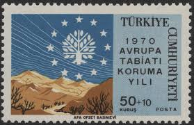 |
| eBay | Mint Never Hinged/MNH Postal Card, Stationery Turkey Stamps for sale | eBay | 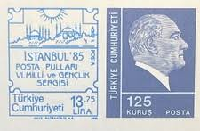 |
| Alamy | TURKEY - CIRCA 1942: stamp printed by Turkey, shows president Kemal Ataturk, circa 1942 Stock Photo - Alamy | 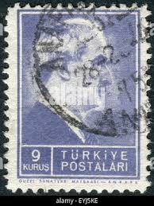 |
| Dreamstime.com | Rize editorial stock image. Image of exterior, journey - 101761289 | 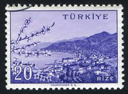 |
| Shutterstock | Istanbul Turkey December 27 2020 Turkish Stock Photo 2657225419 | Shutterstock | 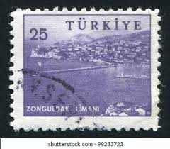 |
| Alamy | Historical letter envelope hi-res stock photography and images - Page 8 - Alamy | 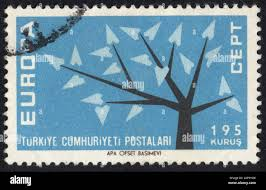 |
| eBay | TURKEY 1200 - Kemal Ataturk "1956 Light Violet Blue" (pb38934) | eBay | 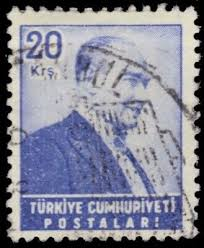 |
| Alamy | Stamps 1979 hi-res stock photography and images - Alamy | 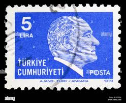 |
| eBay | 1979 TURKEY MNH STAMPS MINISHEET ATATURK | eBay | 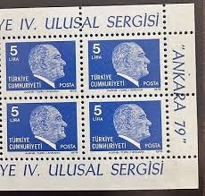 |
| Alamy | Drawing aircraft hi-res stock photography and images - Page 15 - Alamy | 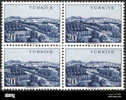 |
| TouchStamps | Stamp: Kemal Ataturk (Turkey 1979) - TouchStamps | 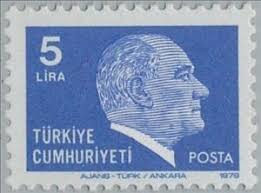 |
| Stampedia | stampedia TURKEY STAMP catalog | 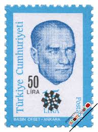 |
| iStock | Czechoslovakia 1959 Frederic Joliot Curie 10th Anniversary World Peace Movement Stock Photo - Download Image Now - iStock | 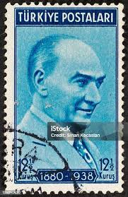 |
| vividagallery.com | Turkey Ataturk Overprint Lira Blue Green 1972 Typography Reuse Ornament by Vivida Gallery - Vivida Gallery | 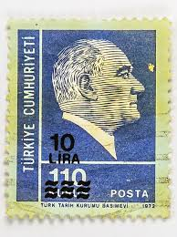 |
| eBay | Turkey 1994 - 2003 Semi-Postal Unused(NH) Lot | eBay | 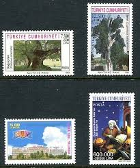 |
| Shutterstock | Turkey Circa 1992 Cancelled Revenue Stamp Stock Photo 2685445305 | Shutterstock | 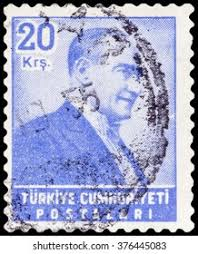 |
| iStock | Turkish Postage Stamp Stock Photo - Download Image Now - Antique, Black Background, Black Color - iStock | |
| Shutterstock | Russia Ykraine Crimea Circa 1969 Antique Stock Photo 253634185 | Shutterstock | |
| Alamy | Turkey stamp hi-res stock photography and images - Alamy | |
| Alamy | Turkey circa 1959 postage stamp hi-res stock photography and images - Page 2 - Alamy | |
| Benim Koleksiyonum | 1958/1960 Homeland Series City Stamp: İzmir Quadruple Block Stamp | |
| Shutterstock | 105+ Thousand Turkey Postage First Day Cover Royalty-Free Images, Stock Photos & Pictures | Shutterstock | |
| Fine Art America | Mustafa Kemal Ataturk Photos for Sale - Fine Art America | |
| eBay | S52643 TURKEY 1979 MNH Ankara 79 M/S | eBay |